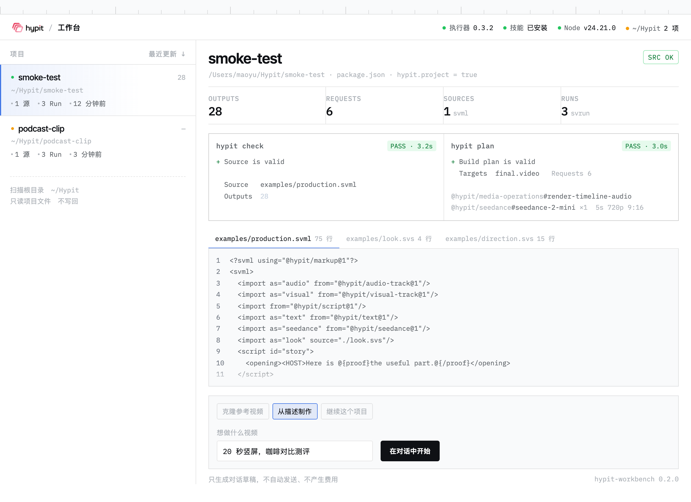
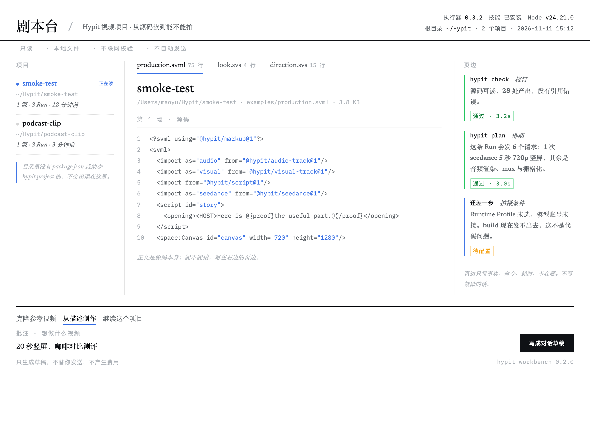
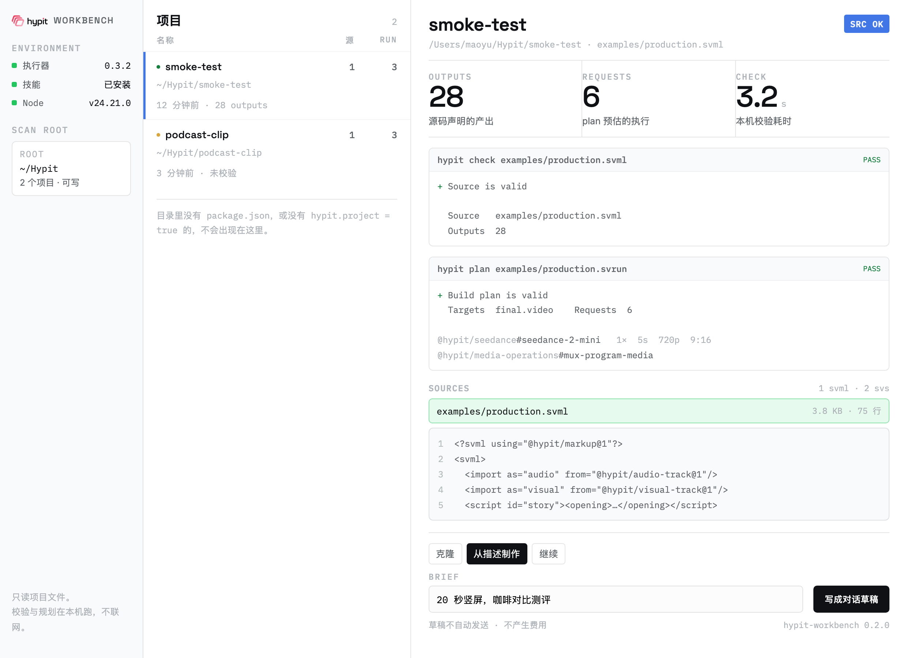
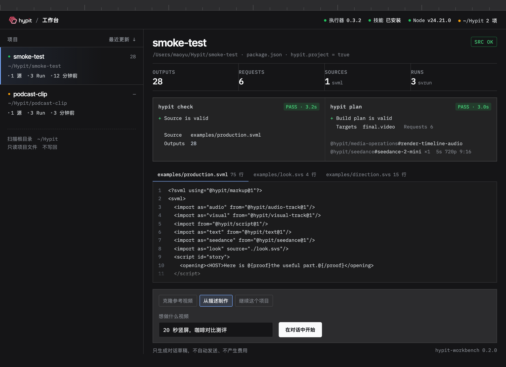
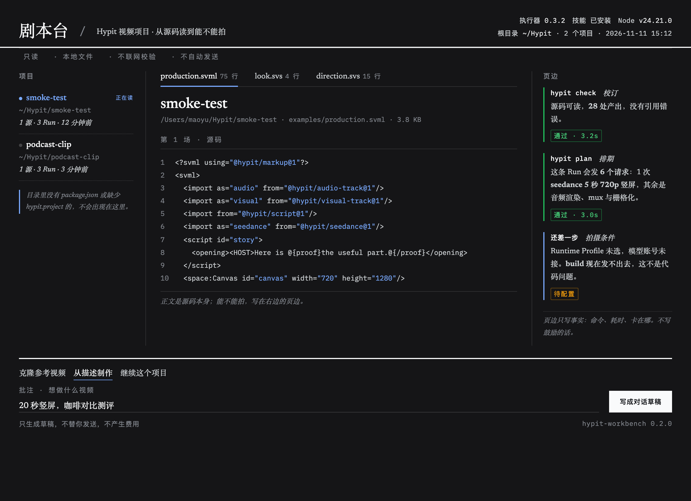
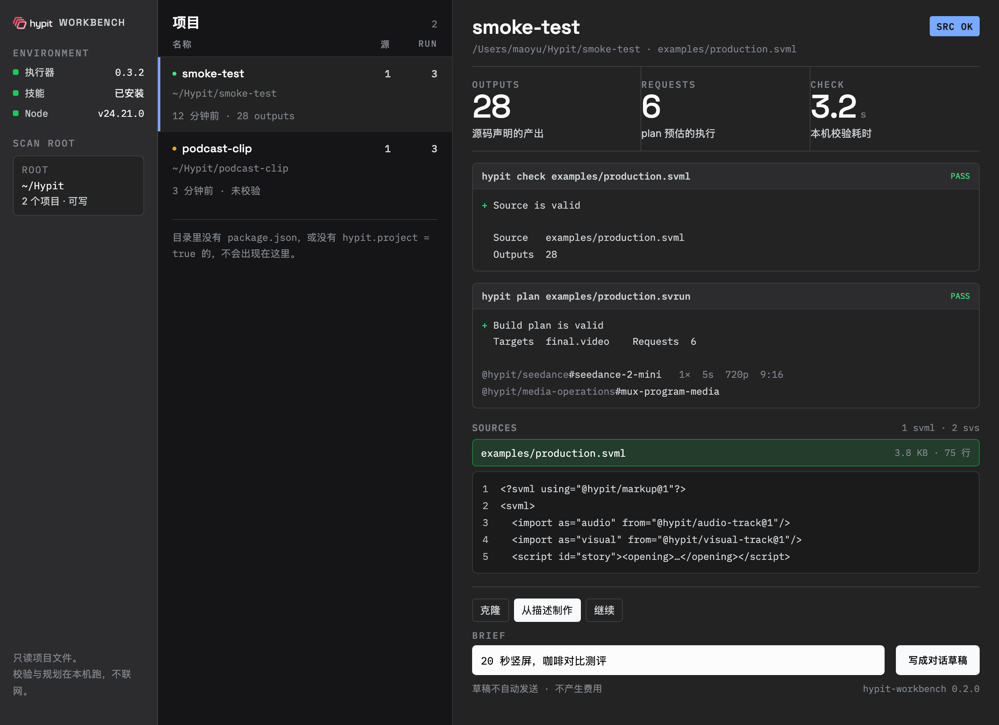

A · 媒体架
左侧项目架 + 右侧 check/plan 并排，数据用等宽字。

颜色全部取自 DeepSeek Harness 的 --dsw-alias-*；浅色与深色各出一版，结构与字体不变。
左侧项目架 + 右侧 check/plan 并排，数据用等宽字。

源码当正文，check/plan 当页边批注，衬线刊头。

三列：环境 / 项目表 / 观测区，三个大数字先给结论。

同一套 token 自动落到深色层次，不做第二套皮肤。

纸感去掉，结构留下：衬线 + 页边在深底上依然成立。

荧光绿换成宿主强调色，选中条与状态章都走 token。
